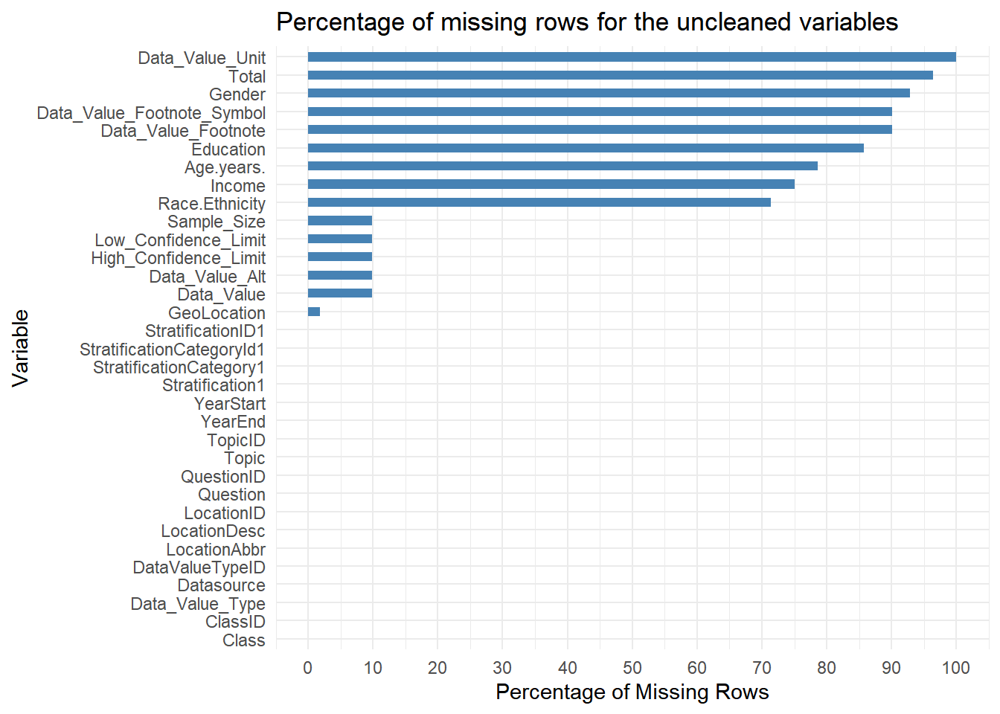

2 Data
2.1 Technical Description
We have taken the data from the Centers for Disease Control and Prevention. This dataset includes data on adults’ diet, physical activity, and weight status from the Behavioral Risk Factor Surveillance System. This data is used for DNPAO’s Data, Trends, and Maps database, which provides national and state-specific data on obesity, nutrition, physical activity, and breastfeeding. The data collected by the BRFSS is actually survey data, which is collected across different socio-economic cohorts.
The metadata was last updated on August 26, 2023. This dataset is intended for public access. We downloaded the CSV file from the link given below:(https://catalog.data.gov/dataset/nutrition-physical-activity-and-obesity-behavioral-risk-factor-surveillance-system)
The data is also provided in multiple formats, e.g., CSV, JSON, and XML files. The dataset’s number of rows and columns is 88629 and 33, respectively.
- Publisher of the data: Centers for Disease Control and Prevention
- Maintainer of the data: DNPAO Public Inquiries
The data can actually be divided into different questions and their supporting variables.
e.g., “Question: Percent of adults who engage in no leisure-time physical activity?” will have a numerical value, which is actually a percentage. It will be shown that this answer belongs to which Class of question, the location of the respondents, as well as the category. This category column makes this data very interesting in the sense of how it is saved. For most of the question - topic - location combination, there exists multiple categories like RACE, Education, Income, etc as well as the values of the categories apart from the answer to the question. Due to this, a lot of columns like Education, Gender, and Income have values that are missing when the Stratification category does not correspond to that particular category value. We should drop these particular columns when analyzing since they do not add much.
From the initial missing value analysis, we can see that a lot of columns, like Data_Value_Unit, Total, Gender, etc, have a high number of NULL values. Let us analyze all the columns and drop/transform them from the data.
2.1.1 Data Cleaning/ Transformation
Let us look at each and every column in the data frame and see how relevant they are. We will transform/drop them if we see them as relevant to be dropped. Please refer to the appendix to see the description of every column of the dataset.
We will be dropping some columns like Datasource, Data_Value_Unit, Data_Value_Type, and Data_Value_Footnote_Symbol since they have only one unique value, hence adding nothing to the analysis.
We will be dropping columns like YearEnd, Data_Value_Alt, and Topic since other columns have the same values as these.
We can drop Data_Value_Footnote since it is purely correlated to the fact whether the Data_Value field is NA or not. In the case where it is NA, it has the value “Data not available because sample size is insufficient.”. Hence, we should keep in mind that wherever the Data_Value field is NA, it is due to the lack of sample size.
Then, there are some columns that we can drop that have a high number of NULL values, as mentioned in the graph. This is because other proxy columns exist in their place, like StratificationCategory1 and Stratification1. These columns are Total, Age.years, Education, Gender, Income, Race.Ethnicity and LocationDesc.
We will drop Low_Confidence_Limit and High_Confidence_Limit since we will not use their fields in our analysis.
Finally, we are going to drop all the ID columns whose values we already have, like ClassID, TopicID, QuestionID, DataValueTypeID, LocationID, StratificationCategoryId, and StratificationID1
In the end, we are left with 9 columns, which are YearStart, LocationAbbr, Class, Question, Data_Value, Sample_Size, GeoLocation, StratificationCategory1, and Stratification1.
2.2 Research Plan
In order to carry out the research mentioned in the introduction, we will be using the new dataset, which is much cleaner. That dataset has these particular columns.
YearStart: YearStart represents the start for collecting information on adult diet, physical activity, and weight status.
LocationAbbr: Identifies the Abbreviations of specific geographic locations.
Class:
Description: Categorizes the data into classes related to health and lifestyle
Values: “Physical Activity,” “Obesity / Weight Status,” “Fruits and Vegetables.”
Context: Classifies the data based on health-related categories, providing insights into physical activity, obesity, and nutrition related to fruits and vegetables.
Question: The ‘Question’ column encompasses a diverse array of health-related inquiries and measurements for adults, providing a comprehensive overview of various aspects such as physical activity, weight status, and dietary habits.
Data_Value: Data_Value represents diverse data points. The values range from 0.9 to 77.6 and include missing values (NA). This column signifies quantitative measurements as a percentage that answers the questions given to the cohort.
Sample_Size: The sample size indicates the number of observations for each corresponding data entry.
StratificationCategory1: The “StratificationCategory1” column categorizes data based on various demographic factors, including “Race/Ethnicity,” “Education,” “Income,” “Age (years),” “Gender,” and “Total.” The “NA” values indicate missing or undefined entries in this categorization.
Stratification1: This column provides a detailed breakdown of the data based on various demographic factors, allowing for nuanced analysis and comparisons across different population segments.
With the presence of these columns, we will have all the relevant data required to carry out the research plan.
To give an example, if we wanted to find the obesity patterns prevalent among adults, we would find the relevant question ‘Percent of adults aged 18 years and older who have obesity’ and perform analysis for this cohort across different socio-economic filters like Income, Race or across Demographic filters like Age and location. After getting the relevant insights, we plan to showcase our findings using different and relevant visualizations.
2.3 Missing value analysis
Now that we have our clean data let us perform a Missing value analysis on this particular data.
Now that we have chosen the essential columns, we are going to rename those columns.
LocationAbbr -> Location
Data_Value -> Value
Sample_Size -> SampleSize
StratificationCategory1 -> Category
Stratification1 -> CategoryVal
This particular graph shows that Value, SampleSize, and GeoLocation have some missing values. Let us try to dive deeper into this and find if we can identify some correlations and patterns to fix.
We can find a lot of insights from the missing value plots.
- From the graph, only Value, SampleSize, and GeoLocation seem to have missing values.
- Out of all the rows, around 88% seem to have columns with no missing data. The rest of the rows seem to have at least one column with missing values.
- According to the missing patterns, four different patterns are available. The first pattern is where we have all the rows completely filled. The second pattern has Value and SampleSize missing. The third pattern has only the GeoLocation missing. The fourth pattern has Value, SampleSize, Category, and CategoryValue missing.
- There is a correlation between the missing SampleSize rows and Value rows. There is also a correlation between the missing Category and CategoryValues.
- From the initial data cleaning, we know that this is due to the fact that the rows have an insufficient sample size. Due to this insufficiency, both the Value and SampleSize fields are NULLs together. After a quick check, we can decipher that this indeed is true.
- Regarding pattern 4, it is not sure why these particular columns (i.e., Category and CategoryValue) are NULL for some specific rows. However, since they are NULL only when Pattern 2 exists, i.e., lack of sufficient sample size, we can choose to combine it with Pattern 2 for all intents and purposes.
- The interesting case here is the pattern 3 since this missing data is not due to the lack of sufficient sample size. After a quick analysis, we can see that this corresponds to the Location value as ‘US’. This makes a lot of sense since the US does not have a GeoLocation value, but its internal states do have a GeoLocation value. Hence, we need to keep this in mind when doing analysis for the entire Country as a whole rather than State-wise analysis.
Conclusions:-
- We can drop rows belonging to pattern two and pattern four since we do not have values to derive insights from due to the lack of sufficient SampleSize.
- We cannot drop rows belonging to pattern three since they correspond to the entire US Data as a whole.